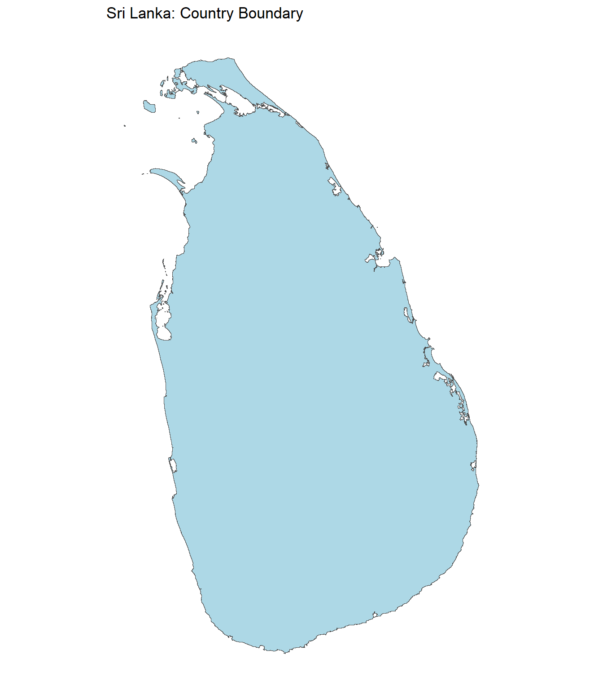
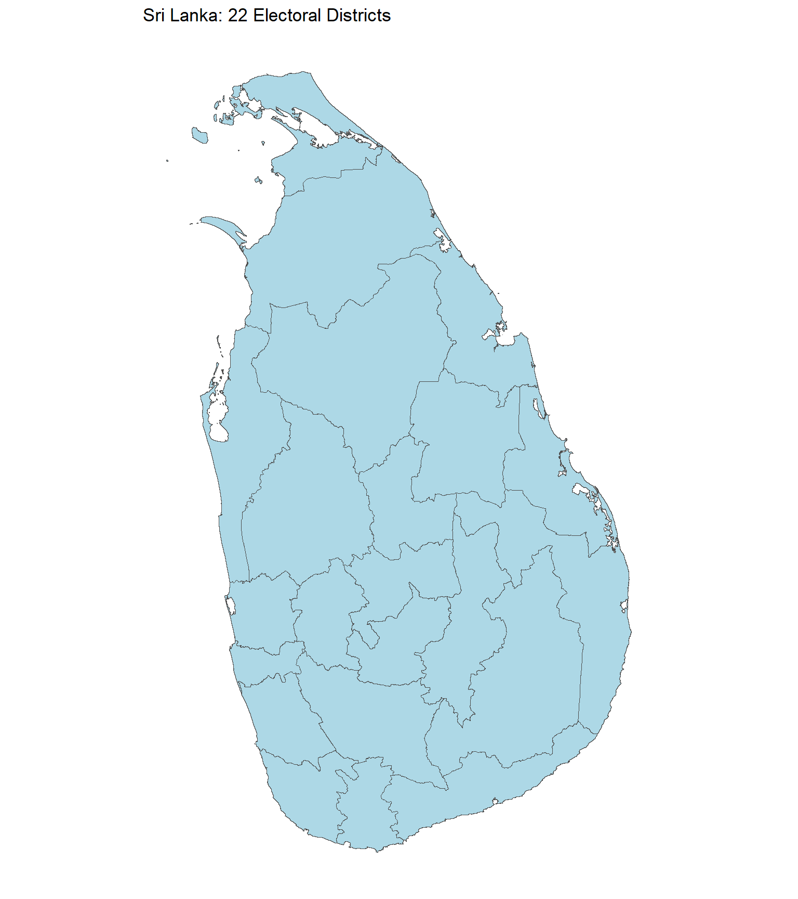
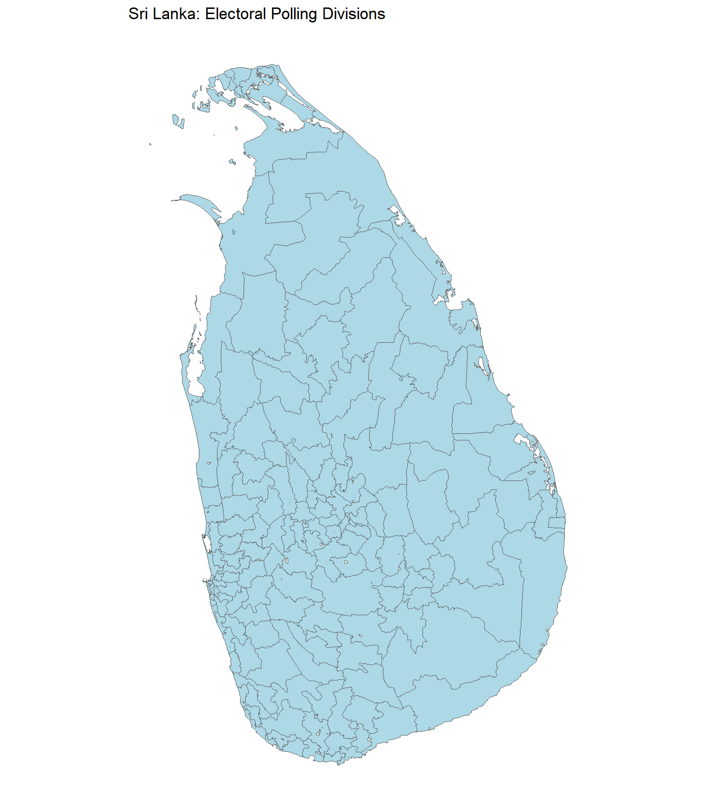
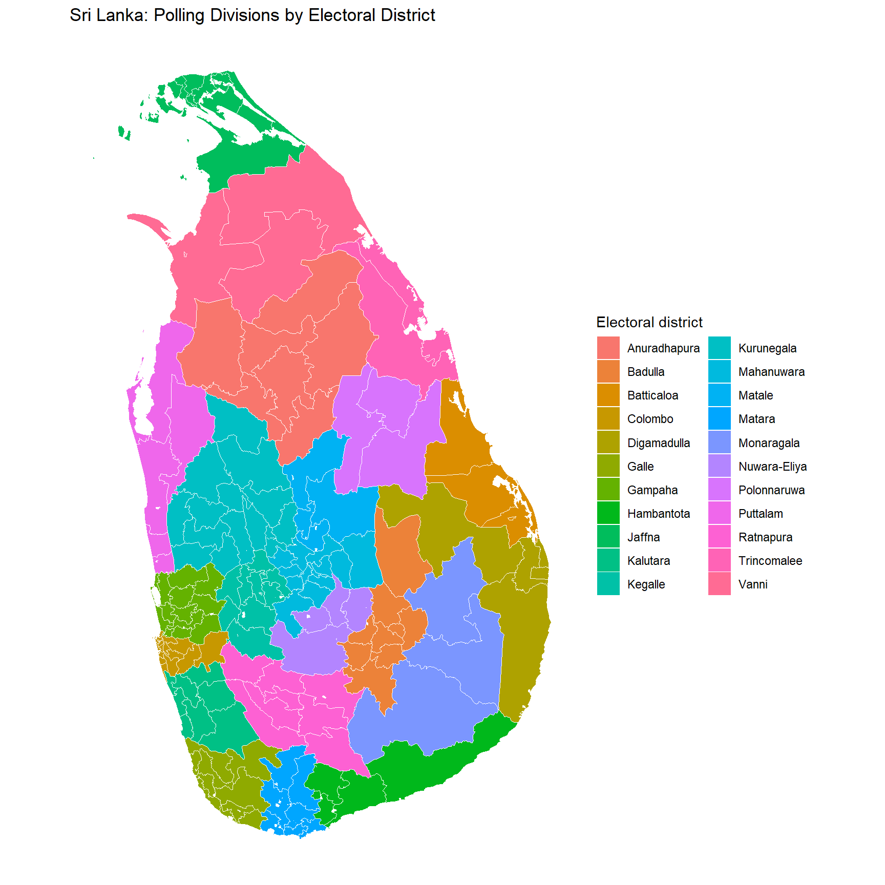
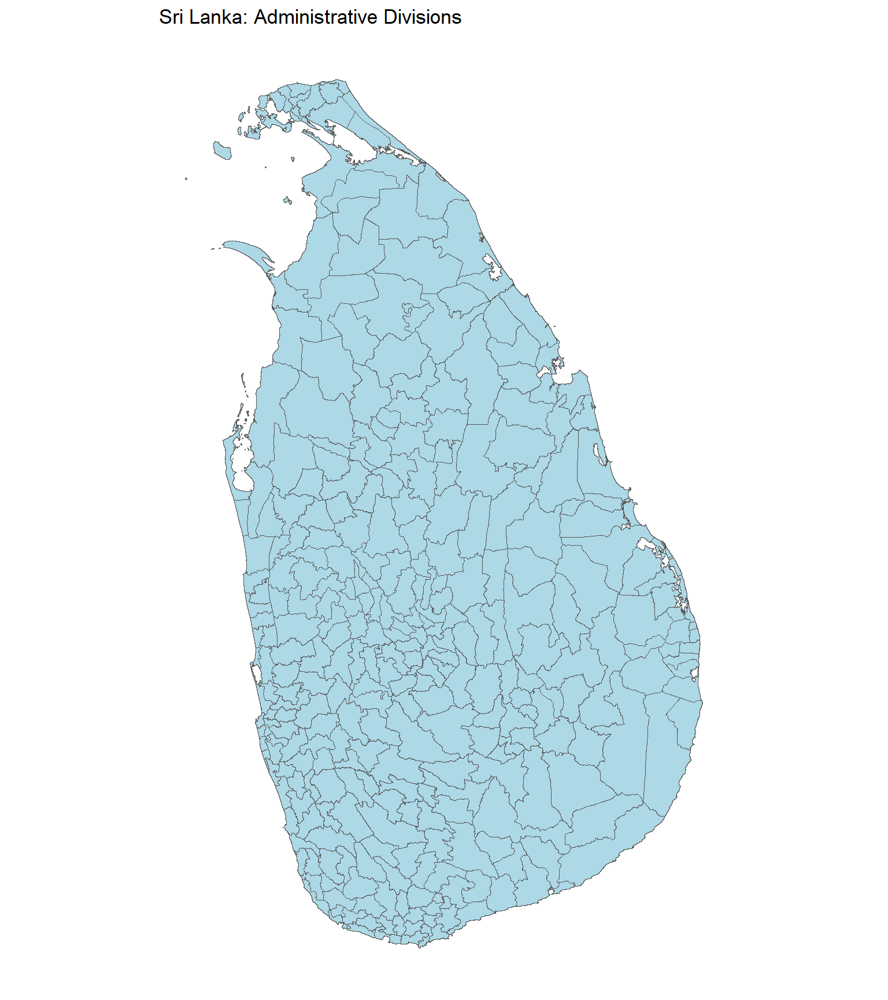

SLspatial provides spatial boundary datasets for Sri Lanka as simple features (sf) objects. The package supports mapping, spatial analysis, and integration of administrative and electoral geographic data. It includes the country boundary, administrative districts, electoral districts, electoral polling divisions, and administrative divisions. The datasets support analysis at multiple geographic levels while distinguishing administrative from electoral geography.
Installation
Install the development version from GitHub:
# install.packages("remotes")
remotes::install_github("Amalan-ConStat/SLspatial")Available datasets
| Dataset | Features | Coverage | Key attributes |
|---|---|---|---|
SLBoundary |
1 | Sri Lanka country boundary |
Country, ISO2, ISO3
|
SLAdministrativeDistricts |
25 | Administrative districts |
SourceID, SourceName, District
|
SLElectoralDistricts |
22 | Electoral districts | District |
SLElectorate |
160 | Electoral polling divisions across 22 electoral districts |
ElecCode, District, Electorate, OrigName
|
SLAdminDivisions |
323 | Administrative divisions across 25 administrative districts |
DistCode, District, EDistrict, DivCode, Division
|
All five datasets are sf objects with a geometry column. Counts reflect the source boundary versions used in the package and should not be interpreted as a statement about current official administrative boundaries.
SLBoundary
A single-feature country boundary, with country name and ISO two- and three-letter codes. The geometry is a MULTIPOLYGON in WGS84 (EPSG:4326).
SLAdministrativeDistricts
The 25 administrative district polygons. SourceID and SourceName preserve identifiers and names from the source; District uses election-aligned labels for selected districts (such as Digamadulla for Ampara). The geometry remains administrative: Kilinochchi and Jaffna, and the three administrative districts associated with Vanni, remain separate features.
SLElectoralDistricts
The 22 electoral district polygons, derived from SLAdministrativeDistricts. Jaffna and Kilinochchi are combined into the Jaffna electoral district; Mannar, Mullaitivu, and Vavuniya are combined into Vanni. The remaining districts retain their administrative boundaries. This is a derived layer, not an independently sourced official electoral-boundary file.
SLElectorate
The 160 electorate (polling division) polygons, with ElecCode, District, Electorate, and OrigName. Names were harmonised with the 2024 presidential election data where possible. Three names were manually assigned rather than confirmed through an exact election-data match.
SLAdminDivisions
The 323 administrative division polygons, with DistCode, District, EDistrict, DivCode, and Division. District refers to the administrative district; EDistrict is the corresponding electoral district label, allowing aggregation or grouping by either geography.
Administrative districts and electoral districts are not interchangeable. Use SLElectoralDistricts for electoral district geometry and SLAdministrativeDistricts for administrative district geometry. In particular, avoid interpreting the election-aligned District labels in SLAdministrativeDistricts as meaning that the polygons themselves have been merged.
Getting started
library(SLspatial)
library(sf)
library(dplyr)
library(ggplot2)
# Inspect the datasets
lapply(
list(SLBoundary = SLBoundary,
SLAdministrativeDistricts = SLAdministrativeDistricts,
SLElectoralDistricts = SLElectoralDistricts,
SLElectorate = SLElectorate,
SLAdminDivisions = SLAdminDivisions),
nrow
)
#> $SLBoundary
#> [1] 1
#>
#> $SLAdministrativeDistricts
#> [1] 25
#>
#> $SLElectoralDistricts
#> [1] 22
#>
#> $SLElectorate
#> [1] 160
#>
#> $SLAdminDivisions
#> [1] 323
head(st_drop_geometry(SLElectorate))
#> ElecCode District Electorate OrigName
#> 1 EC-21A Ratnapura Eheliyagoda Eheliyagoda
#> 2 EC-13C Digamadulla Kalmunai Kalmunai
#> 3 EC-20C Monaragala Wellawaya Wellawaya
#> 4 EC-12C Batticaloa Paddiruppu Paddiruppu
#> 5 EC-13B Digamadulla Sammanthurai Samanthurai
#> 6 EC-18A Polonnaruwa Minneriya Minneriya
head(st_drop_geometry(SLAdminDivisions))
#> DistCode District EDistrict DivCode Division
#> 1 1 Ampara Digamadulla 1 Addalachchenai
#> 2 1 Ampara Digamadulla 2 Akkaraipattu
#> 3 1 Ampara Digamadulla 3 Alayadiwembu
#> 4 1 Ampara Digamadulla 4 Ampara
#> 5 1 Ampara Digamadulla 5 Damana
#> 6 1 Ampara Digamadulla 6 DehiattakandiyaMapping the country and district boundaries
Plot the national boundary:
ggplot(SLBoundary) +
geom_sf(fill = "lightblue", colour = "grey30", linewidth = 0.3) +
coord_sf(datum = NA) +
theme_minimal() +
labs(title = "Sri Lanka: Country Boundary")
Plot the 25 administrative districts:
ggplot(SLAdministrativeDistricts) +
geom_sf(fill = "lightblue", colour = "grey30", linewidth = 0.3) +
coord_sf(datum = NA) +
theme_minimal() +
labs(title = "Sri Lanka: 25 Administrative Districts")Plot the 22 derived electoral districts:
ggplot(SLElectoralDistricts) +
geom_sf(fill = "lightblue", colour = "grey30", linewidth = 0.3) +
coord_sf(datum = NA) +
theme_minimal() +
labs(title = "Sri Lanka: 22 Electoral Districts")
Mapping electoral polling divisions
ggplot(SLElectorate) +
geom_sf(fill = "lightblue", colour = "grey35", linewidth = 0.15) +
coord_sf(datum = NA) +
theme_minimal() +
labs(title = "Sri Lanka: Electoral Polling Divisions")
ggplot(SLElectorate) +
geom_sf(aes(fill = District), colour = "white", linewidth = 0.12) +
coord_sf(datum = NA) +
theme_minimal() +
theme(legend.position = "right") +
labs(title = "Sri Lanka: Polling Divisions by Electoral District",
fill = "Electoral district")
Mapping administrative divisions
ggplot(SLAdminDivisions) +
geom_sf(fill = "lightblue", colour = "grey35", linewidth = 0.12) +
coord_sf(datum = NA) +
theme_minimal() +
labs(title = "Sri Lanka: Administrative Divisions")
Exploring administrative and electoral districts
Count administrative divisions within each administrative district:
SLAdminDivisions |>
st_drop_geometry() |>
count(District, name = "AdministrativeDivisions") |>
arrange(District)
#> District AdministrativeDivisions
#> 1 Ampara 19
#> 2 Anuradhapura 22
#> 3 Badulla 15
#> 4 Batticaloa 12
#> 5 Colombo 12
#> 6 Galle 18
#> 7 Gampaha 13
#> 8 Hambantota 11
#> 9 Jaffna 14
#> 10 Kalutara 14
#> 11 Kandy 20
#> 12 Kegalle 11
#> 13 Kilinochchi 4
#> 14 Kurunegala 30
#> 15 Mannar 5
#> 16 Matale 11
#> 17 Matara 16
#> 18 Moneragala 11
#> 19 Mullaitivu 5
#> 20 Nuwara Eliya 5
#> 21 Polonnaruwa 7
#> 22 Puttalam 16
#> 23 Ratnapura 17
#> 24 Trincomalee 11
#> 25 Vavuniya 4Examine the correspondence between administrative and electoral districts:
SLAdminDivisions |>
st_drop_geometry() |>
distinct(District, EDistrict) |>
arrange(EDistrict, District)
#> District EDistrict
#> 1 Anuradhapura Anuradhapura
#> 2 Badulla Badulla
#> 3 Batticaloa Batticaloa
#> 4 Colombo Colombo
#> 5 Ampara Digamadulla
#> 6 Galle Galle
#> 7 Gampaha Gampaha
#> 8 Hambantota Hambantota
#> 9 Jaffna Jaffna
#> 10 Kilinochchi Jaffna
#> 11 Kalutara Kalutara
#> 12 Kegalle Kegalle
#> 13 Kurunegala Kurunegala
#> 14 Kandy Mahanuwara
#> 15 Matale Matale
#> 16 Matara Matara
#> 17 Moneragala Monaragala
#> 18 Nuwara Eliya Nuwara-Eliya
#> 19 Polonnaruwa Polonnaruwa
#> 20 Puttalam Puttalam
#> 21 Ratnapura Ratnapura
#> 22 Trincomalee Trincomalee
#> 23 Mannar Vanni
#> 24 Mullaitivu Vanni
#> 25 Vavuniya VanniCount administrative divisions within each electoral district:
SLAdminDivisions |>
st_drop_geometry() |>
count(EDistrict, name = "AdministrativeDivisions") |>
arrange(EDistrict)
#> EDistrict AdministrativeDivisions
#> 1 Anuradhapura 22
#> 2 Badulla 15
#> 3 Batticaloa 12
#> 4 Colombo 12
#> 5 Digamadulla 19
#> 6 Galle 18
#> 7 Gampaha 13
#> 8 Hambantota 11
#> 9 Jaffna 18
#> 10 Kalutara 14
#> 11 Kegalle 11
#> 12 Kurunegala 30
#> 13 Mahanuwara 20
#> 14 Matale 11
#> 15 Matara 16
#> 16 Monaragala 11
#> 17 Nuwara-Eliya 5
#> 18 Polonnaruwa 7
#> 19 Puttalam 16
#> 20 Ratnapura 17
#> 21 Trincomalee 11
#> 22 Vanni 14Coordinate reference systems and spatial operations
The datasets retain their source geometries and coordinate reference systems. Check the CRS before combining layers or calculating distances and areas. Transform both layers to an appropriate common CRS when performing spatial operations.
st_crs(SLBoundary)
#> Coordinate Reference System:
#> User input: WGS 84
#> wkt:
#> GEOGCRS["WGS 84",
#> DATUM["World Geodetic System 1984",
#> ELLIPSOID["WGS 84",6378137,298.257223563,
#> LENGTHUNIT["metre",1]]],
#> PRIMEM["Greenwich",0,
#> ANGLEUNIT["degree",0.0174532925199433]],
#> CS[ellipsoidal,2],
#> AXIS["latitude",north,
#> ORDER[1],
#> ANGLEUNIT["degree",0.0174532925199433]],
#> AXIS["longitude",east,
#> ORDER[2],
#> ANGLEUNIT["degree",0.0174532925199433]],
#> ID["EPSG",4326]]
st_crs(SLAdministrativeDistricts)
#> Coordinate Reference System:
#> User input: WGS 84
#> wkt:
#> GEOGCRS["WGS 84",
#> DATUM["World Geodetic System 1984",
#> ELLIPSOID["WGS 84",6378137,298.257223563,
#> LENGTHUNIT["metre",1]]],
#> PRIMEM["Greenwich",0,
#> ANGLEUNIT["degree",0.0174532925199433]],
#> CS[ellipsoidal,2],
#> AXIS["latitude",north,
#> ORDER[1],
#> ANGLEUNIT["degree",0.0174532925199433]],
#> AXIS["longitude",east,
#> ORDER[2],
#> ANGLEUNIT["degree",0.0174532925199433]],
#> ID["EPSG",4326]]
st_crs(SLElectoralDistricts)
#> Coordinate Reference System:
#> User input: WGS 84
#> wkt:
#> GEOGCRS["WGS 84",
#> DATUM["World Geodetic System 1984",
#> ELLIPSOID["WGS 84",6378137,298.257223563,
#> LENGTHUNIT["metre",1]]],
#> PRIMEM["Greenwich",0,
#> ANGLEUNIT["degree",0.0174532925199433]],
#> CS[ellipsoidal,2],
#> AXIS["latitude",north,
#> ORDER[1],
#> ANGLEUNIT["degree",0.0174532925199433]],
#> AXIS["longitude",east,
#> ORDER[2],
#> ANGLEUNIT["degree",0.0174532925199433]],
#> ID["EPSG",4326]]
st_crs(SLElectorate)
#> Coordinate Reference System:
#> User input: EPSG:4326
#> wkt:
#> GEOGCRS["WGS 84",
#> ENSEMBLE["World Geodetic System 1984 ensemble",
#> MEMBER["World Geodetic System 1984 (Transit)"],
#> MEMBER["World Geodetic System 1984 (G730)"],
#> MEMBER["World Geodetic System 1984 (G873)"],
#> MEMBER["World Geodetic System 1984 (G1150)"],
#> MEMBER["World Geodetic System 1984 (G1674)"],
#> MEMBER["World Geodetic System 1984 (G1762)"],
#> MEMBER["World Geodetic System 1984 (G2139)"],
#> MEMBER["World Geodetic System 1984 (G2296)"],
#> ELLIPSOID["WGS 84",6378137,298.257223563,
#> LENGTHUNIT["metre",1]],
#> ENSEMBLEACCURACY[2.0]],
#> PRIMEM["Greenwich",0,
#> ANGLEUNIT["degree",0.0174532925199433]],
#> CS[ellipsoidal,2],
#> AXIS["geodetic latitude (Lat)",north,
#> ORDER[1],
#> ANGLEUNIT["degree",0.0174532925199433]],
#> AXIS["geodetic longitude (Lon)",east,
#> ORDER[2],
#> ANGLEUNIT["degree",0.0174532925199433]],
#> USAGE[
#> SCOPE["Horizontal component of 3D system."],
#> AREA["World."],
#> BBOX[-90,-180,90,180]],
#> ID["EPSG",4326]]
st_crs(SLAdminDivisions)
#> Coordinate Reference System:
#> User input: WGS 84
#> wkt:
#> GEOGCRS["WGS 84",
#> DATUM["World Geodetic System 1984",
#> ELLIPSOID["WGS 84",6378137,298.257223563,
#> LENGTHUNIT["metre",1]]],
#> PRIMEM["Greenwich",0,
#> ANGLEUNIT["degree",0.0174532925199433]],
#> CS[ellipsoidal,2],
#> AXIS["latitude",north,
#> ORDER[1],
#> ANGLEUNIT["degree",0.0174532925199433]],
#> AXIS["longitude",east,
#> ORDER[2],
#> ANGLEUNIT["degree",0.0174532925199433]],
#> ID["EPSG",4326]]
st_bbox(SLBoundary)
#> xmin ymin xmax ymax
#> 79.521805 5.918472 81.878754 9.835971Data sources and limitations
- Electoral polling division boundaries: nuuuwan/sl-topojson, using the polling division TopoJSON dated 20 November 2020.
-
Country and administrative district boundaries: Source administrative shapefiles used to prepare
SLBoundaryandSLAdministrativeDistricts; check the associated source metadata for version and licence. -
Electoral district boundaries: Derived from
SLAdministrativeDistrictsby merging administrative polygons into 22 electoral districts. -
Administrative division boundaries: GADM, from the source
LKA_adm2.shpshapefile. -
Electorate naming reference: The 2024 presidential election dataset from
SLPresElection.
Spatial boundaries and administrative arrangements can change over time. The included geometries should not be assumed to reproduce historical electoral or administrative boundaries for every election year. Users should verify source licensing, attribution requirements, and suitability for their intended use.
Documentation and contributing
For dataset descriptions, use ?SLBoundary, ?SLAdministrativeDistricts, ?SLElectoralDistricts, ?SLElectorate, and ?SLAdminDivisions after loading the package. Issues and suggestions can be submitted through the GitHub issue tracker.